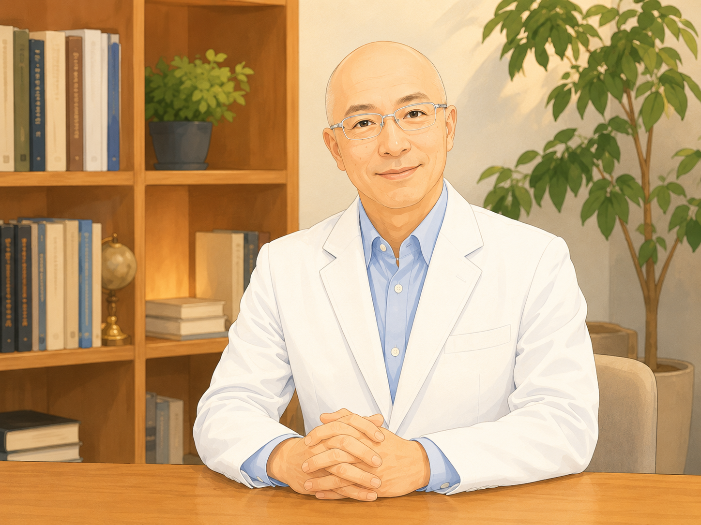

介護を続けながら、
自分の生活も守るために。
家族の介護が始まると、仕事、家事、休息、自分の時間まで、
少しずつ生活のペースが崩れてしまうことがあります。
介護をひとりで抱え込まないために、家族への頼り方、仕事との両立、休む時間のつくり方に加え、理学療法士の視点から身体の負担を減らす工夫も一緒に考えます。

相談では、こんなことを一緒に考えます
今いちばん困っていることから、生活の中で実際に変えられることを一つずつ考えます。
介護する人の「生活」と「身体」の両方を見ます
家族への頼り方や仕事との両立だけでなく、介助による腰や肩の負担、 休み方、姿勢など、身体への負担を減らす工夫も一緒に考えます。


相談すると、こんな変化を目指します
すべてを一度に変えるのではなく、今の生活でできるところから少しずつ変えていきます。
たとえば、こんなご相談
ご相談内容をイメージしていただくための一例です。
仕事を続けながら、家族の介護をしている50代の方
仕事を続けながら母親を介護。休日も家事と介護で終わり、腰痛も続いている。 「自分がやらなければ」と思い、家族にもなかなか頼れず、自分の時間がほとんど取れない。
このような場合、家族に頼れること、介護サービスの活用、仕事との両立、 休む時間の確保、身体の負担を減らす工夫など、今の生活で変えられるところから一緒に考えます。
※上記はサービス内容をイメージしていただくための想定例であり、実際のお客様の声・事例ではありません。
サービス内容・料金
初めての方が相談しやすいよう、初回は30分無料でお話を伺います。
初回オンライン相談
介護・仕事・家事・休息・身体の負担など、現在の生活状況をお聞きし、 どこから見直すと負担を減らせそうかを一緒に確認します。
初めての方向けの導入相談です。 ご感想をいただいた方は、次回セッションを500円割引でご利用いただけます。
初回30分無料で相談してみる個別相談
介護・仕事・家事・休息の優先順位を見直し、 今の生活の中で実行できる具体的な方法を一緒に考えます。
2回目以降の単発相談料金です。 主に土日、一部平日夜に対応しています。
2回目以降の予約をする相談の流れ
初めての方でも安心して相談できるよう、シンプルな流れにしています。
相談を担当します
医療・教育・在宅支援の経験を土台に、 介護を続けながら自分の生活も守れるよう、暮らしの組み直しを一緒に考えます。
有本くにひろ（アリ先生）
Re:Balance 代表
理学療法士として在宅リハビリテーションの現場で、 多くの利用者様とご家族に関わってきました。 その中で、介護を支える人ほど、自分の心身を後回しにしやすい現実を 数多く見てきました。
理学療法士養成校教員として人材育成に携わり、 保健医療学博士として専門性を深めてきました。 現場感のある理解と専門的な視点の両方を活かし、 介護・仕事・家事・休息・身体の負担を一緒に見直し、 介護を続けながら自分の生活も守れる形へ立て直すための相談を行っています。
初回オンライン相談30分無料／オンライン対応／主に土日対応
よくあるご質問
初めての方からよくいただくご質問をまとめています。
介護で崩れた生活のペースを、少しずつ立て直しませんか。
初回相談は30分無料です。 介護・仕事・家事・身体の疲れなど、今いちばん困っていることからお聞きします。
お問い合わせには通常2〜3日以内に返信いたします。
プライバシーポリシー
安心してご相談いただくために、 個人情報の取り扱いについて明示しています。
お問い合わせ時にご提供いただいた氏名・メールアドレス・ご相談内容は、 返信およびサービス提供に必要な範囲でのみ利用します。
取得した個人情報は、法令に基づく場合を除き、 本人の同意なく第三者へ提供しません。
個人情報の管理には十分配慮し、安全に取り扱います。
お問い合わせ：rebalance.selfcare@gmail.com